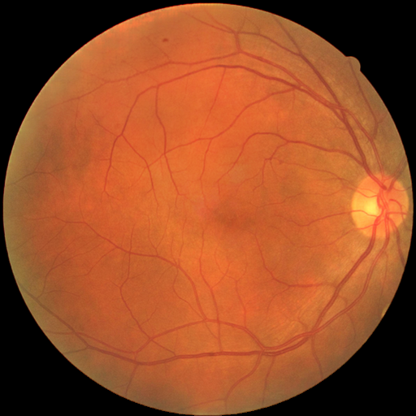
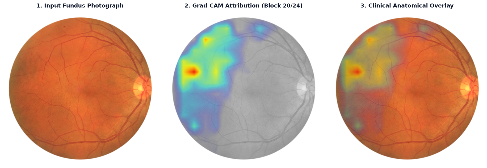

Clinical Patient Selection
Audited CohortSupports JPG, PNG, CFP images (Processed 100% locally)
Retinal Fundus Photography
Right Eye (OD)
Explainable AI: RETFound Layer 20/24 Grad-CAM Saliency Maps
Gradient-weighted class activation mapping (Grad-CAM) on frozen ViT-Large patch tokens

Parallel 5-Disease Retinal Pathology Profile (MuReD Clinical Benchmark)
🔬 Clinical Explainability: How RETFound Identifies Vascular & Ocular Pathology
The input fundus photograph was processed through RETFound (Nature 2023), the 304M parameter Vision Transformer (ViT-Large/16) pretrained on 1.6 million retinal fundus photographs and OCT scans using Masked Autoencoders (MAE). The image was partitioned into 16×16 non-overlapping spatial patches and routed across 24 self-attention transformer blocks.
Why Layer 20 of 24? In deep Vision Transformers, initial layers (1–8) capture raw pixel edges while terminal layers (23–24) collapse into generalized classification tokens. Hooking Layer 20 of 24 extracts the optimal intermediate microvascular geometry (vessel caliber, bifurcation angles, and tortuosity) with high spatial localization without losing structural fidelity.
The attention heatmap isolates specific vascular biomarkers associated with subclinical vascular remodeling:
- Arteriolar-to-Venular Ratio (AVR) & Caliber Narrowing: Scrutinizes precapillary arteriolar caliber relative to venules along superior and inferior temporal vascular arcades. Focal or generalized attenuation reflects elevated systemic vascular resistance.
- Arteriovenous (AV) Crossing Impingement (AV Nicking): Salus' and Gunn's signs are detected where stiffened, thickened retinal arterioles compress crossing venules, providing structural evidence of chronic hypertensive and atherosclerotic damage.
- Peripapillary & Macular Perfusion: Scrutinizes capillary density surrounding the optic nerve head and foveal avascular zone (FAZ), flagging neuroretinal rim thinning (Optic Disc Cupping / Glaucoma).
- Ocular Lesion Topography: Detects microaneurysms, dot-and-blot intraretinal hemorrhages, and hard exudates indicative of Diabetic Retinopathy (DR) and Branch Retinal Vein Occlusion (BRVO).
Anatomical Continuity: The central retinal artery branches directly from the ophthalmic artery, which is the very first major intracranial branch of the Internal Carotid Artery (ICA). Because the retina and carotid circulation share identical embryological and hemodynamic environments, atherosclerotic plaque formation, endothelial shear stress, and intimal-medial thickening in the carotid artery directly parallel microvascular remodeling and arteriolar wall thickening in the fundus. The linear ridge regressor translates this 1,024-D retinal manifold into continuous CIMT wall thickness with an audited error of ±0.120 mm.
Loading patient-specific spatial attribution...